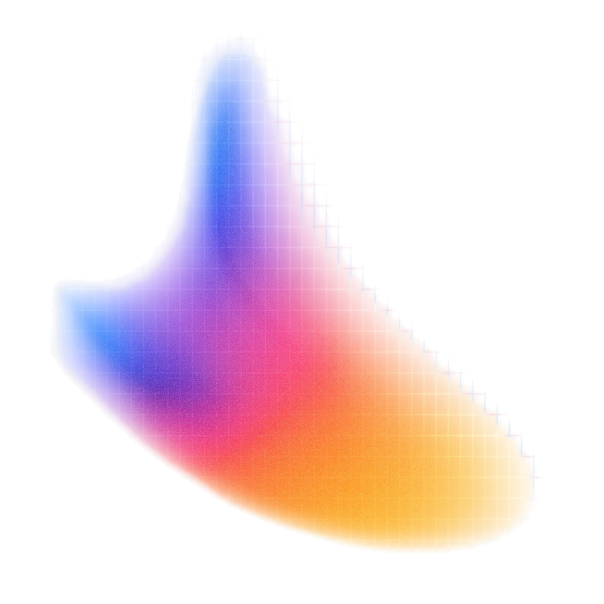
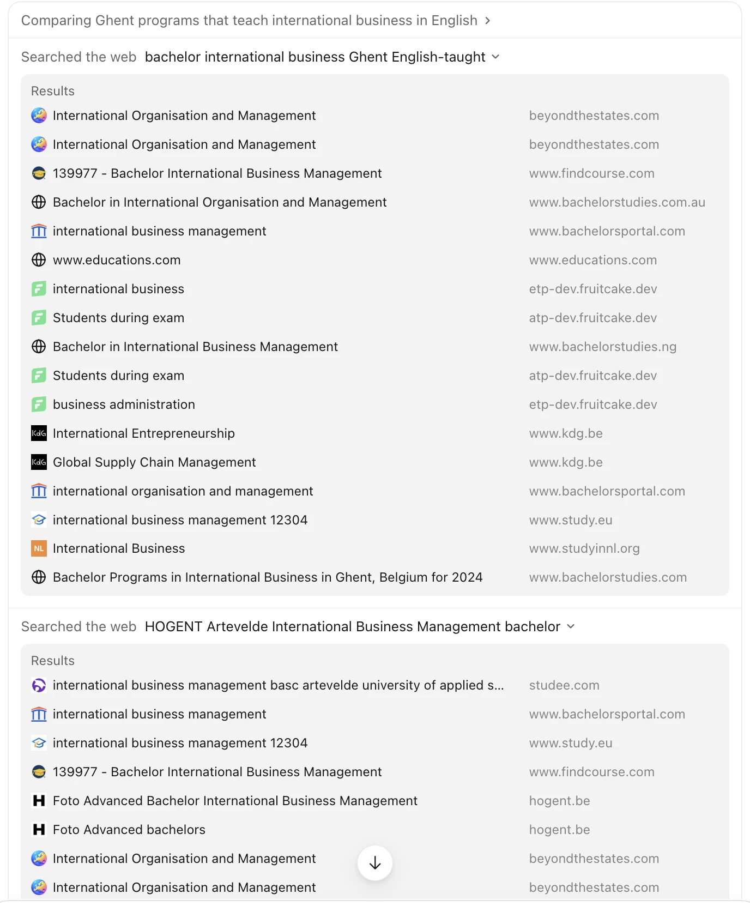

Vindt de AI jou?
Hoe vindt een assistent zijn bronnen, en vindt hij jou?
Open je AI in je eigen map. Typ:
Start je tool niet meer na vier weken? Zeg het meteen. Je buur helpt.
Wat weet je nog?
Wat er nog komt

Iedereen weet dat een AI kan zoeken.
Maar wat leest de AI eigenlijk?
De vraag
Claude-app · zoeken aan · bronnenpaneel open
Wat de AI las

En nu iets wat jullie kunnen nakijken

De AI vertelt over jou wat anderen over jou schrijven.
Ook als het fout of oud is.
Hoe een assistent zijn bronnen vindt
Wat in stap 3 niet gekozen wordt, bestaat niet voor het antwoord.
Week 3: ‘Je model ziet alleen wat jij het geeft.’
Bij retrieval kiest de machine wat het model ziet.

Je staat niet laag.
Je staat er gewoon niet.
Bij Google zag je tenminste dat je op pagina twee stond. Bij een AI word je gewoon niet genoemd.
En je merkt het niet eens.
Niet de beste. De meest beschreven.
Vanochtend: 0 pagina's van artevelde.be. De rest: vergelijkingssites.
Er is geen lijst meer. Er is één antwoord.
Twee richtingen, één mechanisme
Bedrijven doen het tweede op schaal. Dat heet RAG. Jij doet vandaag de kleine versie.
Vindbaarheid: 10% van je memo
Jouw Live Query
Noteer, voor elke run
De laatste drie zijn de belangrijkste. Die worden overgeslagen.
Waarom die wel, en die niet?
Handen omhoog
Daarna: twee paren vertellen hun verrassendste resultaat.
Het patroon
GEO: genoemd worden. Door anderen, en vaak genoeg.
Pauze
Tot 12:35. Daarna leert je tool lezen.
Je tool leest een bron
Plak dit bij je agent
In hoeveel van de 5 gebruikte je tool het document?
En hoe weet je dat het antwoord uit het document komt?
Kan AI dit bedrijf vinden?
Score 0–3 per criterium. Geef per criterium je bewijs.
0–6 onzichtbaar · 7–11 marginaal · 12–15 aanwezig · 16–18 goed
Artevelde, bachelor IBM: 12/18
Sterk op wat Artevelde zelf maakt. Zwak op wat anderen schrijven.
Je post: drie koppen
In je pull request: build/bronnen/ en je 5 nieuwe testgevallen.
Tegen dinsdag 24 november, 23:59
dien week 6 in
Wat niet gelezen wordt, bestaat niet voor het antwoord.